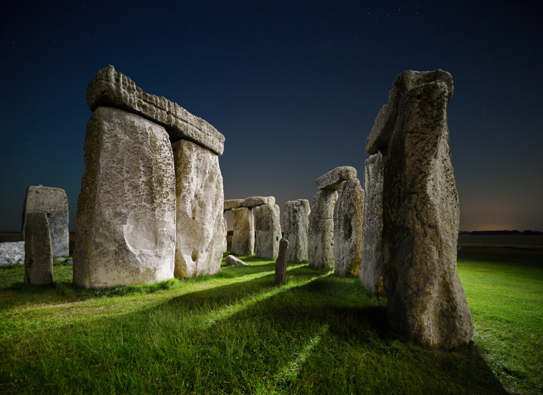

Stonehenge: el misterio de las piedras gigantes

Stonehenge es un monumento prehistórico situado en Inglaterra. Sus enormes piedras, colocadas hace miles de años, han generado numerosas preguntas sobre su construcción y finalidad...
La construcción de Stonehenge comenzó aproximadamente en el año 3000 a. C. Sin embargo, las grandes estructuras de piedra fueron levantadas alrededor del año 2500 a. C.
Uno de sus mayores misterios es cómo consiguieron transportar y levantar piedras de varias toneladas utilizando los recursos disponibles en aquella época.
Algunas de estas piedras procedían de regiones situadas a cientos de kilómetros de distancia, como las colinas de Preseli, en Gales.
Existen diferentes teorías sobre la finalidad de Stonehenge. Algunos investigadores consideran que pudo utilizarse como lugar ceremonial o religioso.
También se sabe que el monumento tiene una relación con los movimientos del Sol, especialmente durante los solsticios de verano e invierno.
A pesar de los descubrimientos arqueológicos, todavía existen preguntas sobre los rituales y las creencias de las personas que construyeron Stonehenge.